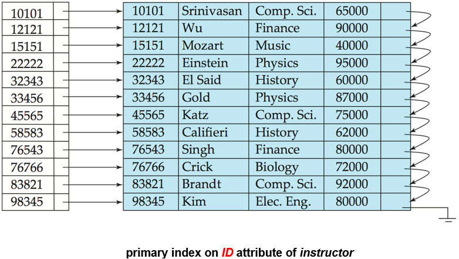
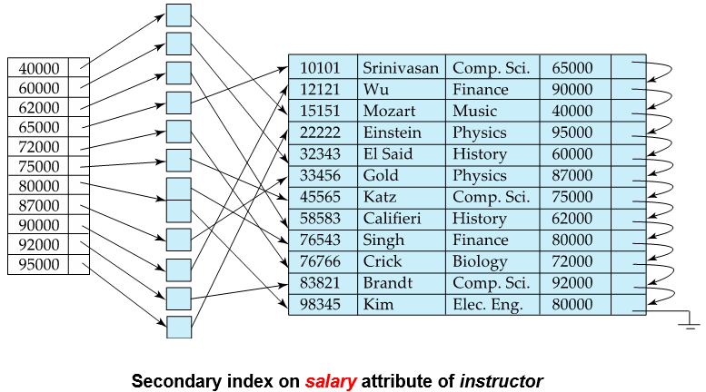
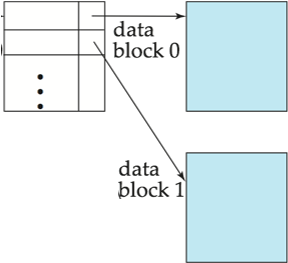
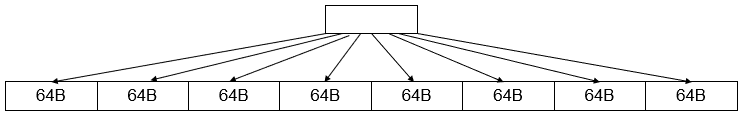

Chapter 14 Indexing¶
Basic Concepts¶
- 索引机制是用来加速访问的
- Search Key: attribute/ set of attributes, 在file中查找records
-
index file: 由一系列 index entries 组成
- index entries: [search-key | pointer]
-
索引有两种基本类型：
- Ordered indices
- Hash indices
-
索引评估指标：
- 支持的高效访问类型： Point / Range
- Access / Insertion / Deletion time
- Space overhead
Ordered Indices¶
index entries 按照 search-key 排序后存储在 index file 中
-
Primary Index: 指在一个顺序排列的文件中，其search-key 指定了该文件顺序的索引
- aka clustered index(聚集索引)
- 通常是，但不是必须由主键构成的
- Index-sequential file: 数据文件顺序排列且有一个主索引
-
Secondary Index: 其search-key指定的顺序和文件的顺序不同的索引
- aka non-clustered index(非聚集索引)
Eg
- primary index: 
- secondary index: 
主索引和数据文件顺序一致，点查和范围查都很快
Secondary Index 可能出现一个search-key对应多个record的情况
- Dense Index(稠密索引): 索引文件中包含所有的search-key值
- Sparse Index(稀疏索引): 索引文件中只包含一部分search-key值
Dense Index 空间开销和维护开销大，但定位快
Sparse Index 空间开销和维护开销小，但定位慢
tradeoff
- 对文件中每一个block建立一个index entry，如此构成sparse index

- Multi-level Index:
- 当primary index太大，不适用于内存时
- 将primary index当作磁盘上的顺序文件对待，为其建立sparse index
- outer index: 为 primary index 构建的索引
- inner index: primary index file
- 同理可以建立多级索引
- 注意维护时要同步更新
B+ Tree Index¶
B+ 树
- 根到叶所有路径等长
- 内部节点（即非根非叶节点）有\([\lceil n/2 \rceil, n]\)个子节点
- 各个叶节点储存\([\lceil \frac{n-1}{2} \rceil, n-1]\)个值
- 特例：根非叶，则至少两个子节点；根是叶，则0到n-1个值
- 叶节点之间有指针相连，形成一个有序链表
- 叶节点存储数据，非叶节点存储索引
Observations¶
- 内部节点之间由指针连接，因此逻辑上相近的块不需要物理上相近
- 非叶节点实际构成了一个稀疏索引
- 对于一棵 n 阶的B+树，如果它包含K 个 search-key 值，则:
- 高度至多为 \(\lceil \log_{\lceil \frac{n}{2} \rceil} (\frac{K}{2}) \rceil + 1\)
- 高度至少为 \(\lceil \log_{n} K \rceil\)
- 实际应用中一个叶节点的大小通常和一个disk block大小相同，一般是4KB
- 相应的阶数n在100附近
height and size estimation¶
- fan-out: $ n = \lceil \frac{block_{size} - pointer_{size}}{SearchKey_{size} + pointer_ size} \rceil + 1$
B+ Tree File Organization¶
叶节点不存pointers而存records
- record通常比pointer大，因此提高空间利用率比较重要
- 一种优化是在插入、删除时放宽分裂和合并的条件，从而减少分裂或合并的次数：允许两个以上的兄弟节点共同承担
- 例如重新分配时涉及2个兄弟节点（共3个节点参与），可使每个节点至少包含⌊2n/3⌋个entries
- 一种优化是在插入、删除时放宽分裂和合并的条件，从而减少分裂或合并的次数：允许两个以上的兄弟节点共同承担
Other issues¶
-
Record relocation and secondary indices
- 如果一条record被移动到另一个block中，所有存放指向该record的指针的二级索引都需要更新，这导致split和merge操作的开销增加
- 解决方法：在二级索引中存储主索引的Search Key，而非直接存储记录指针。
- record 位置变动时只更新主索引，二级索引不变，减少开销
- 查询时需要额外遍历主索引
- 如果主索引键不唯一，可以额外添加record id来唯一标识record
-
Variable-length strings as keys
- 导致各节点fan-out不一致
- Prefix compression: 适当保留前缀，只要能区分即可
-
Multiple-key Access
- 叶节点储存的指针不指向record，而是指向一个pointers block
- 添加另外的属性以保证唯一性，此时查找是在原有的基础上对新属性的范围查找
- 这样对于 首个属性的范围查找和第二个属性的点查这样的组合 并不友好
Bulk Loading and Bottom-up Build¶
对于一次性向B+树里插入多个entries（多于一次IO操作）： 1. 先将所有entries排序（利用外部排序），然后插入 2. 先排序，然后从叶节点开始逐层向上构建B+树，构建好之后，用顺序IO将数据写入磁盘
Eg
更多时候的情况是需要将内存中的B+树和磁盘中的B+树合并， 这时需要引入新的结构：LSM tree（Log-Structured Merge Tree）
Indexing in Main Memory¶
-
内存随机访问的成本：
- 虽然比磁盘/闪存访问便宜得多，但相比缓存读取仍然昂贵
- 在大B+树节点中进行二分查找会导致很多缓存未命中(cache misses)
-
cache conscious设计：
- 优先选择能最好利用缓存的数据结构
- 使用能放入缓存行(cache line)的小节点B+树可以减少缓存未命中
-
核心思想：
- 使用大节点优化磁盘访问(减少I/O)
- 但在节点内部使用小节点构成的树结构(而非searchKey-Pointer构成的数组)来优化缓存访问
Eg

Indexing in Flash¶
-
Flash 中：
- 随机读写成本显著低于传统磁盘(20-100微秒)
- 写入不是原地更新(in-place)，最终需要擦除(erase)操作
-
Page size optimize：
- 最佳page size比传统磁盘小得多，因为erase操作的代价高
- bulk-loading仍然有用，因为它能最小化页面擦除次数
- 采用写优化树结构(如LSM-tree, Buffer Tree)来最小化flash的写入次数
- 这些结构已被适配用于创建闪存优化的搜索树
Log Structured Merge Tree (LSM Tree)¶
- 一开始插入的records都先放进memory的树中（L0 Tree）
- 索引不一定是B+树，只要对内存友好即可，多用skip list
- 当内存中的树满了，就将其顺序写到磁盘中，形成一个新的level（L1 Tree）
- 此时内存中的树会被清空，继续插入新的records，满了再写入磁盘，和L1 merge
- L1达到一定规模后，继续合并到更大的L2 Tree中，依此类推
Note
- bottom-up build 的方式来构建树
- \(L_{i+1}\) 层的规模的阈值是 \(L_i\) 层的k倍
-
Benefits:
- inserts by sequential I/O operations
- Leaves are full so that avoiding space waste
-
Drawbacks:
- Searching is expensive, as it may need to search multiple levels
Stepped Merge Index¶
Disk 中的各层都有k个\(L_i\) Tree:
-
当前层的k个树都满了，才会merge到下一层
-
write cost 进一步减少，但query cost 进一步增加
对点查询的优化：
- 为每一个树维护一个Bloom filter(存放在内存中)
- 查询时先查Bloom filter，判断是否在该树中
- 如果在，才去查该树，否则直接跳过
创建日期: 2025年5月5日 20:57:26